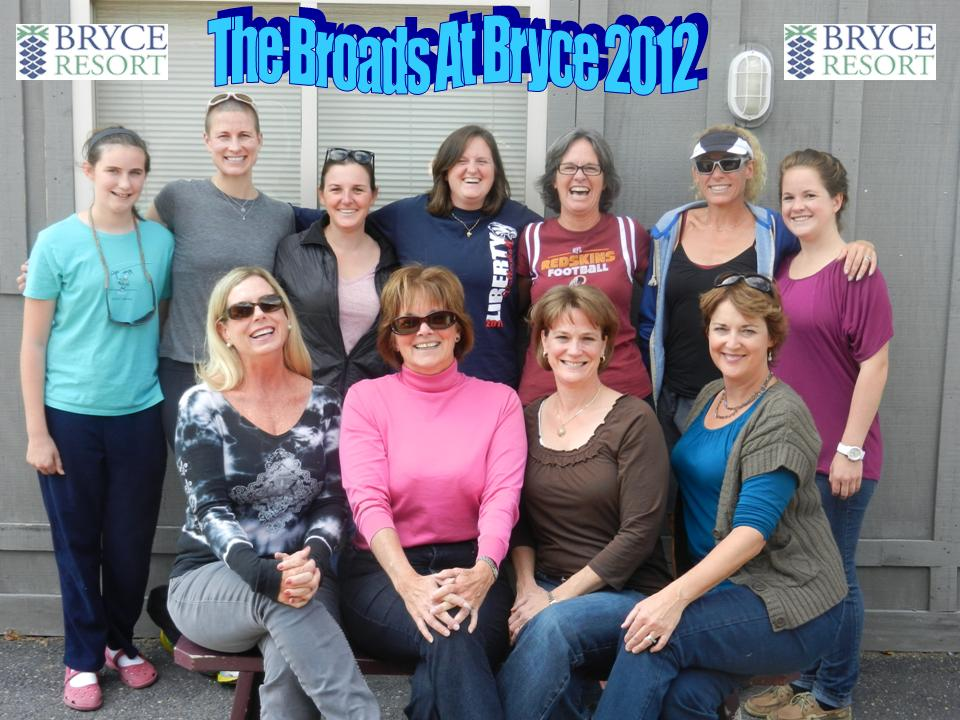

<div id="historyComponent">
  <div id="histroyContentId">
    <div class="row  justify-content-center">
      <div class="col-lg-8 col-sm-12">
        <h1 class="display-4"><b>A brief history</b></h1>
        <div class="bg-light">
          <p>
            Bryce opened in 1965 when Pete Brice got some snow guns and blew a pile of snow. I remember
            hearing him tell of needing some more snow and getting a load of crushed ice so that he could open.
            Reb McCowen was our first patroller who served on the volunteer patrol until 2018. For the first couple
            of years, the patrol was not affiliated with the NSP. In 1968 the Bryce Mountain Ski Patrol was born.
          </p>
          <div class="container border">
            <span class="row justify-content-center">
              
            </span>
            <span class="row justify-content-center lead font-italic small-text">Bryce Volunteer Ski Patrol 1979.</span>
          </div>
          <p>
            During the 1974-75 winter Bryce consisted of a small building where the present-day ski
            school desk is located which was the ski school, the Copper Kettle Restaurant—the original name was to have
            been Copper Still but Virginia law prohibited the use of names for restaurants/bars referring to alcohol,
            two chair lifts one of which is still in operation (lift 2), one mitey-mite surface tow—now the long carpet—which
            was located close to where the tubing run is now placed, the beginners’ area in the same location as now but with a
            rope tow, and one trail: Revenuer’s Run.
          </p>
          <p>
            There was a midstation located at the crossover with hangover where you could get off for a beginner’s
            flatter trail and you could also get on to ride to the top part of the mountain. Later on, there were three trails
            down from the top—Redeye, Revenuer’s Run, and White Lightning. Hangover, in a slightly different
            configuration, existed but was seldom open. All trails were named with a moonshine theme. The midstation
            was closed later. Bootlegger was added in the late 70s. Locher Bowl was added much later.
          </p>
          <div class="container border">
            <span class="row justify-content-center">
              
            </span>
            <span class="row justify-content-center lead font-italic small-text">Bryce Volunteer Ski Patrol 2001.</span>
          </div>
          <p>
            The first aid room/ready room/ski storage area was a small room directly behind the lift mechanism for
            lift 1. The narrow entryway where a time clock was located served as ski storage and booting up area. It
            was also the entrance to the first aid room. There were two beds in the main room with a roll of cellulose
            wadding suspended over the one bed, a sink, a small wall cabinet for first aid supplies, a rack of adhesive
            tape rolls on the wall, and a door opposite the entry for hauling the patients across the beginners’ area to
            waiting cars or ambulances. Kiwi had painted a series or arrows on the ceiling so that they were visible to
            patients and which pointed to a box for donations mounted next to the sink. This first aid room became the
            ready-room for pro patrollers when a lean-to was added to the building some time in the 80s. That allowed
            for three beds and a storage closet for volunteers to keep their skis as well as the storage of all first aid
            equipment. Snow from the tower guns close by the front doors of the first aid room would pile up on the
            roof over the those doors causing the lintel to sag and jam the doors. Often we had to climb onto the roof
            and shovel it free to open the doors.
          </p>
          <p>
            Finally in the ’90s the ski patrol got a proper first aid room in the new ski building with easy access for
            ambulances and increased room for beds and supplies and a working restroom. There was a small A-frame
            shed at the top of Lift 1 for housing a toboggan.
          </p>
          <p>
            Requirements in 1975 for passing the candidate test were the successful completion of the Red Cross
            Standard First Aid Course, a simple written and on-the-hill first aid test, and a ski and toboggan test
            administered by Randy. Ski requirements were snow plow, side slip, kick turn, stop-in-the-box, an
            equipment carry, and toboggan handling including stopping a runaway toboggan from the tail rope
            position. With a bit of luck, the whole test could be achieved in a day followed by the hill climb from base
            of lift 1 to the top bull wheel frame of the same lift carrying a full fanny pack and ending with a skiing
            return to the bottom. By 2004, the requirements had expanded to an Outdoor Emergency Care course
            requiring 80 to 90 hours of classroom study, a grueling season of on-the-hill first aid scenarios, a day and a
            half of first aid scenarios as a test and ski and toboggan test.
          </p>
          <div class="container border">
            <span class="row justify-content-center">
              
            </span>
            <span class="row justify-content-center lead font-italic small-text">Ladies of the Mountain.</span>
          </div>
          <p>
            Annual (Spring) meetings were held at a Sheraton hotel just outside Fredericksburg—essentially
            halfway between Richmond and Washington which were the two poles of the Bryce patrol. The Leckies
            offered their cabin on a spur of Lake Gaston and their neighbor’s place—Sheriden Wilson—as the site of
            the annual meeting. The location was ideal but the commute time from Washington was excessive. After
            several years the meeting site was moved the Williams cottage on Gwynn’s Island and then to the
            McCowen cottage on the same island. Finally the patrol settled on Bryce Resort and was able to include a
            lift evac practice as well as a CPR/AED refresher.
          </p>
          <p>
            As a fund-raising effort, the patrol once relied on conducting ski swaps, first in the Washington area
            and later in the Richmond area. Bryce Patrol’s first effort at managing a swap rather than acting in a
            support role, was at a small shop just off Braddock Road near Fairfax City. Don Christian was PL and
            headed the swap and Mike D’Antonio was treasurer and had a spreadsheet worked out which allowed us to
            issue checks at the close of the swap. The swap was small and not very profitable and only done the one
            year. Ski Chalet opened a branch in Chantilly and Bryce was invited to manage the swap.
            Don Christian created a schedule board with magnetic strips to display the daily roster assignments.
          </p>
          <p>
            Shep Snow became patrol leader, he instituted the practice of “top time.” Prior to that time we
            operated on the bump system which worked when skiing was good but fell apart over lunch time and in
            sloppy weather—often there would be a plaintive cry over the radio, “Isn’t anyone else out here?” Top time
            assigns a specific time to each patroller to stand at the top of the highest operating lift, ready to respond to a
            call for assistance. During Kevin Fagan’s tenure as patrol leader, a “heavy” sled was made ready at the base
            of lift 1 packed with a spine board, traction splint, and oxygen. This sled could be transported to the
            accident site by snowmobile and its request also served as a call for plenty of extra patrollers.
            In earlier days, the patrol often held a dinner late in the ski season strictly as a social get together.
            There was one held at Sky Chalet the evening of the day Robert Leckie passed his patroller test. He was
            designated patroller-on-duty that night and the rest of us trooped off to Sky Chalet. Several spaghetti
            dinners were held in the basement of Our Lady of Shenandoah which made it easy for patrollers on night
            duty to slip in and out.
          </p>
          <p>
            In years past management provided a chalet which was free to patrollers needing a place to
            stay. Its location would vary from year to year and was—at times—outside the resort. It was common for
            late arriving patrollers to slip inside and flop on the floor rather than put on a light and disturb sleeping
            patrollers. Bill “BJ” Judkins arrived late one night and quietly tossed his bed roll on the floor upstairs.
            In the morning he awoke and came downstairs only to come face-to-face with a farm family eating
            breakfast. He had entered the wrong house!
          </p>
          <p>
            The patrol traditionally provided much support for the Copper Kettle. It usually began with the “5:00
            meeting” which extended sometimes until closing as for many years, there was no night skiing. Ask Randy
            and Steve about the games they created and used to lighten the pockets of other patrons.
          </p>
          <div class="container border">
            <span class="row justify-content-center">
              
            </span>
            <span class="row justify-content-center lead font-italic small-text">Nancy DiBenendetto early morning in 2016.</span>
          </div>
          <p>
            The patrol was part of the Eastern Division of NSP called Southern Appalachian
            including Wisp, Canaan, Bryce, and Massanutten. Wintergreen started out in the Southern Division. As the
            Southern Division grew, first Massanutten and then Bryce seceded from Eastern and joined Southern.
            While the Southern Appalachian Region offered great support and camaraderie, it became obvious that our
            patrol was more closely in tune with the attitudes in the Southern Division and we made the move.
          </p>
          <p>
            The Bryce patrol has traditionally been small in number—for many years seldom reaching 40
            members and long in camaraderie. The patrol has also provided the sons and daughters who become the
            patrol’s future members.
          </p>
          <hr />
          <span class="small-text">Written by Don Christian</span>
          <hr />
        </div>
      </div>
    </div>
  </div>
</div>
